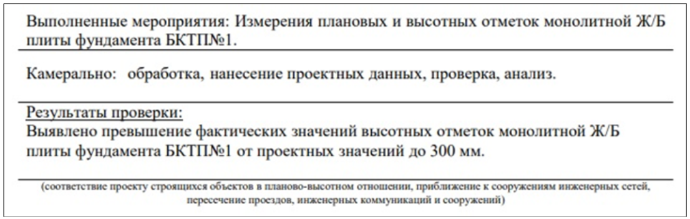
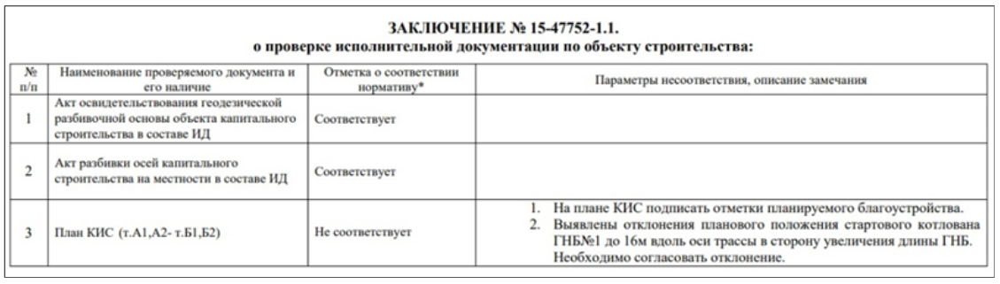
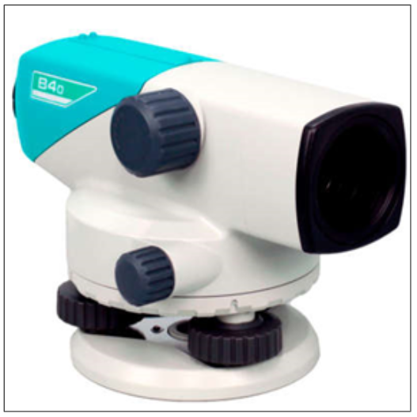
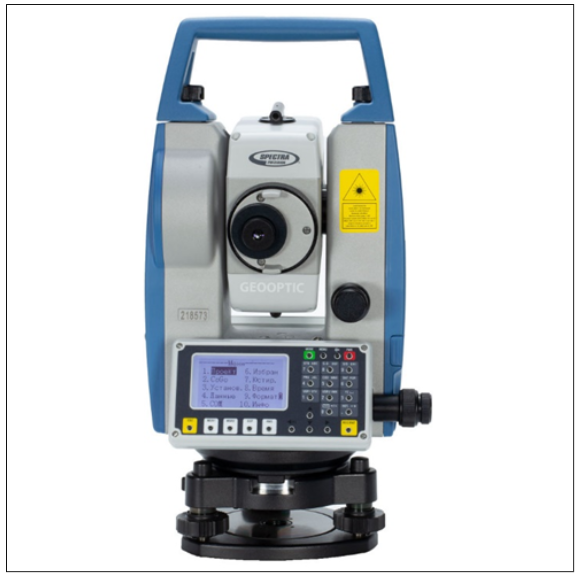
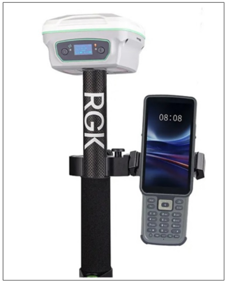

Строительный контроль объектов капитального строительстваЛокальный архив курса
Строительный контроль на этапах строительства · Как проводить строительный контроль
Геодезический контроль
Вера СафуановаЭксперт строительного контроля с опытом работы в строительной сфере более 15 лет
На этом уроке поговорим про геодезический контроль: что и как проверяют геодезисты строительного контроля, самостоятельно или по готовым схемам. В конце урока вы на готовых исполнительных схемах потренируетесь определять, находятся ли представленные виды работ в допустимых отклонениях.
Геодезический контроль – это проверка соответствия разбивочных осей, конструкций и элементов на соответствие согласованной РД.
У строительного контроля есть геодезисты, которые проводят проверку подрядных организаций
Как проводят геодезический контроль
Контроль может проводиться отдельно от подрядчика. Геодезист выезжает на объект, выполняет съемку планово-высотных положений конструкций или линий, затем выполняет камеральную обработку, сравнивает с проектом и выдает заключение по результатам выездной проверки. Образец заключения смотрите на картинке ниже.

Проверка исполнительной схемы на ее соответствие в натуре. При получении исполнительной схемы с фактическим планово-высотным положением конструкции, геодезист проверяет на объекте ее соответствие с фактом выполненных работ. Такой вид контроля можно производить как самостоятельно, так и совместно с подрядчиком.
Камеральная проверка результатов. При подаче исполнительной документации геодезист строительного контроля может запросить файл редактируемого формата, затем сопоставить фактическую съемку с проектной и выдать заключение о результатах контроля. Пример заключения на картинке ниже.

Чтобы лучше понимать работу геодезистов, разберем некоторые виды оборудования: их точность и применение.
Нивелир

Оптический или цифровой прибор, применяется при производстве работы, где необходимо соблюдение единого горизонта, уклонов, переноса высотных отметок и реперов. Заявленная точность 2 мм на 1 км (может меняться от марки и технических характеристик)
Тахеометр

Электронный оптический прибор широкого спектра действий: от разбивки конструкций и сооружений на местности до переноса высотных отметок. Для корректной работы на местности необходимо знать точные координаты геодезических пунктов и точек, или координаты местной геодезической сети.
Опытным путем совместно с несколькими геодезистами мы установили факт, что более точные и стабильные высотные отметки переносит нивелир. Лазер тахеометра при наведении на известную высоту может дать погрешность из-за наличия внешних факторов: солнце, дождь, снег, а также человеческий фактор
Так же, как и у нивелира, точность зависит от марки и технических характеристик. В среднем погрешность измерений 2-3 мм.
GNSS-приемник RGK SR1 с контроллером

Набирает все большую популярность в геодезической среде. Он не требует привязки и установки в существующей сети. Работает за счет спутникового сигнала. Заявленная точность в плане +-2 мм, по высоте +- 5 мм.
При плотной застройке, городских условиях точность измерений искажается. Частый случай, когда приемник выдавал погрешность до 10 см в плане и до 5 см по высоте. Поэтому при производстве СМР с максимальной погрешностью +-20-50 мм такое оборудование использовать не рекомендуется.
Камеральную проверку фактического положения конструкции с проектным инженер СК может провести самостоятельно. Посмотрите небольшую инструкцию, как это можно сделать.
Встроенный материал 1
Источник и ограничения. Материал доступен только через сеть или вход на внешнюю площадку.
Допустимые отклонения конструкций указаны в действующих ГОСТ и СП.
Бетонные, железобетонные и металлические конструкции
СП 70.13330.2012
Наружные сети канализации
СП 32.13330.2018
Наружные сети водоснабжения
СП 31.13330.2021
Внутренние сети канализации
СП 30.13330.2021
Внутренние сети водоснабжения
СП 30.13330.2021
Кабели
СП 76.13330.2016
ПУЭ-7
Благоустройство
СП 82.13330.2016
Земляные работы
СП 45.13330.2017
При проверке исполнительных схем, на которых указаны фактическое планово-высотное положение элементов и конструкций, можно сделать вывод о допустимых отклонениях.
Для сдачи объемов выполненных работ подрядчик в большинстве случаев занижает фактические значения отклонений. Поэтому проверку конструкций лучше проводить с помощью геодезической службы.
Теперь вы понимаете, что чтение исполнительных схем – один из этапов проверки исполнительной документации, и инженер СК должен ориентироваться в них не хуже геодезиста. В задании ниже представлены исполнительные схемы, по которым необходимо определить, находятся ли указанные виды работ в допустимых отклонениях.
TestCards
Источник и ограничения. Проверка ответов и персонализация зависят от исходного сайта. Локальные файлы сохранены в том виде, в каком были доступны.